Introducing The First Interactive Polkadot & Kusama Ecosystem Map
What is Polkadot? In Q3 2022, major media outlets, podcasts, and financial advice platforms were asking this same question. A layer-0 sharded protocol design with Nominated Proof-of-Stake consensus means that Polkadot and Kusama are able to solve the blockchain trilemma: the system is secure, scalable and highly decentralized, allowing a plethora of parachains (layer-1 blockchains) and decentralized apps (DApps) to run without a glitch.
With a view to providing a panoramic picture of the ever-expanding Polkadot and Kusama ecosystem, SubWallet has teamed up with Parity Technologies to build the first interactive Polkadot & Kusama Ecosystem Map covering 500+ projects spanning 25 categories along with this Polkadot Deep Dive report series. From DeFi, SocialFi, Identity, NFT Marketplaces, Metaverse, Gaming to Bridge, Infrastructure, Smart Contract, Tooling, Data and Privacy solutions, in Q3 2022, the Polkadot and Kusama ecosystem was bustling with activities and brimming with promise.
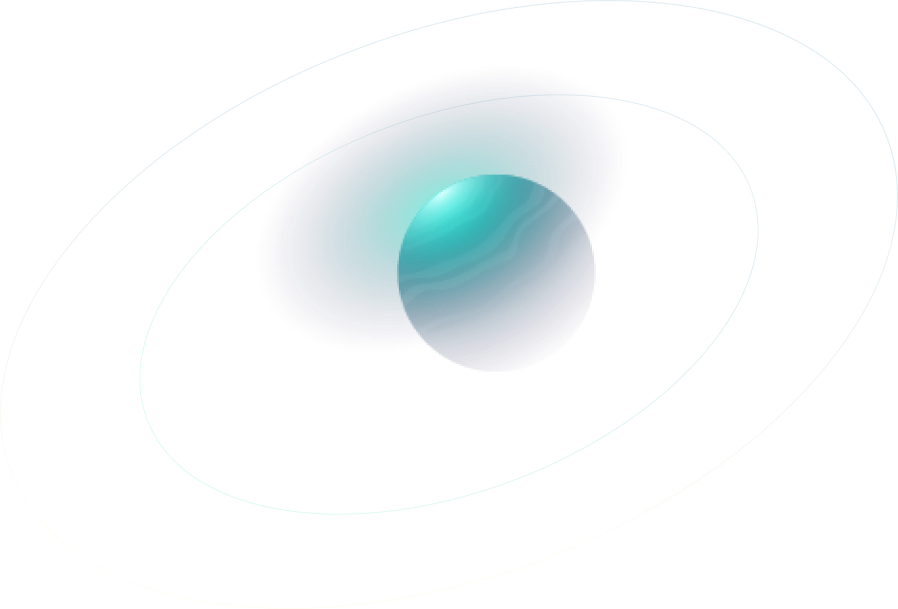

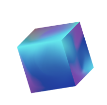
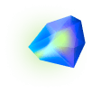
Ecosystem Overview
Financial Status & Development Activity
In H1 2022, the crypto market entered what was known as one of the worst crypto winters that threatened to drive many out of business. After hitting the all-time high of $55.00 with a $53.21B market cap around the time of the first parachain auction in early May 2021, DOT followed a drastic downturn path, going as low as $6.43 at $6.90B market cap on June 13, a month after the unprecedented meteoric LUNA/UST crash. The DOT market cap had gone down 75.03% since the year started, from $26.43B to $6.60B. KSM price and market cap more or less shared the same pattern.

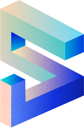
Token Price vs. Development Activity
Interestingly, development activities on Polkadot appeared to be inversely proportional to
token price: when price hit peaks, development activities almost always met valleys.
This
motif was most significant in the later period, from mid-May towards the end of June, as
token price plummeted while development activities soared up with three sharp pinnacles.
One could deduce that the bear market had little to no impact on builders; in
other words, the price slide only showed the tip of the iceberg. Under the surface, teams
were
highly focused on developing and optimizing products, especially with the
introduction of XCM
to Polkadot that promised to
advance interoperability
among parachains and DApps.
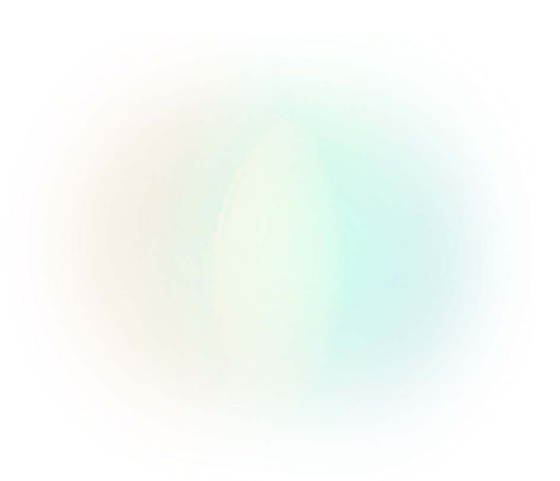
Development Activity Comparison
In terms of total developer count, the
Electric Capital Developer Report in 2021
concluded that Ethereum, Polkadot, Cosmos, Solana and Bitcoin were the five largest
ecosystems. A
look at these five projects' development activities in H1 2022 shed some light on the
current
state.
Polkadot was second only to Solana and outdid Ethereum, Cosmos and Bitcoin most of the
time.
From mid-May onwards, Polkadot took the major lead with its surge in development
activities
amidst market downturn.
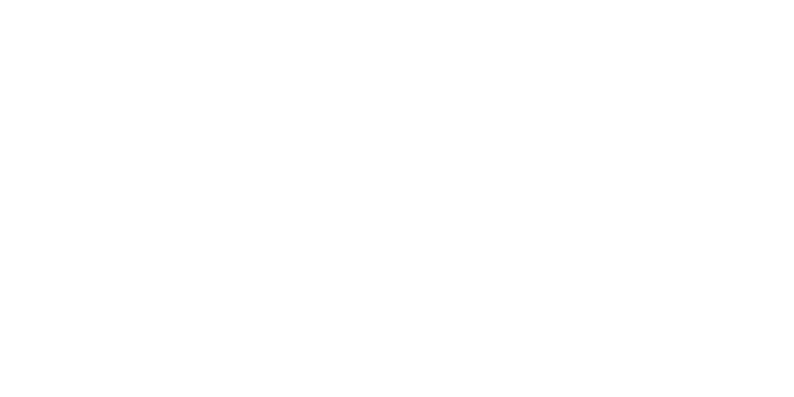
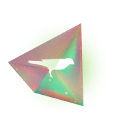
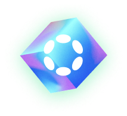
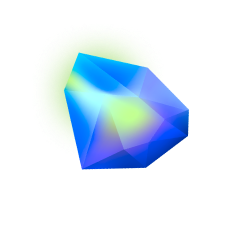
Token Holder & Investor
By the end of June, there had been
171 projects
announcing that they would run a parachain, among which 36 had won an auction on Kusama
and
21 on Polkadot, bonding 3.27M KSM and 131.45M DOT respectively.
The total number of DOT holders continued to rise past 850,000, meaning that it had more
than doubled since the year started at 384,315 holders. May 12 witnessed the peak in
incremental rate with 6,203 additional holders, yet this rate had significantly lowered
compared to 2021, as evident in the flatter slope.
Polkadot Account Overview
As for investors, excluding ETH and BTC, DOT remained the most held
crypto asset among VCs
surveyed by Messari. From H1 2021 to H1 2022, the number of venture capitalists investing in DOT had
steadily increased from 19 to 29.
However, their share had decreased from 43.18% to 35.37% due to a near double in VC
sample.
Polkadot Investment by VCs 2021-2022
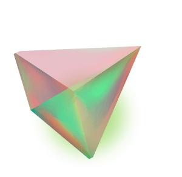
Governance & Treasury
At the time of writing,
treasury spending through proposal approval was decided by
the 13-member council, while referenda were limited to one active at a time, except for an
emergency case that needed fast-tracking approval by the 3-member technical committee.
Though this model was working well in ensuring the network's safety and fair delegation of
treasury funding, it had raised concerns about centralization of authority and process agility.
During
Polkadot Decoded 2022, a global event occurring both offline in four locations and online via live streaming
from June 29 to 30, Polkadot co-founder Gavin Wood addressed these worries in his
introduction of Governance 2. The council and technical committee would be removed, everything from proposal to
tipping would become a referendum which would then be assessed and voted upon through a new mechanism that
ensured the optimal and adaptive balance between safety and agility.
DOT Treasury Activity
Going back to DOT treasury activities, so far this year had seen more dynamics than ever: 57 out
of 140 proposals, accounting for 40.7%, had been submitted within the first six months of 2022
only, with just one rejection. Inflation
hovered around 7%
and remained the main income source for the treasury, while burning took up the lion share of
DOT output.
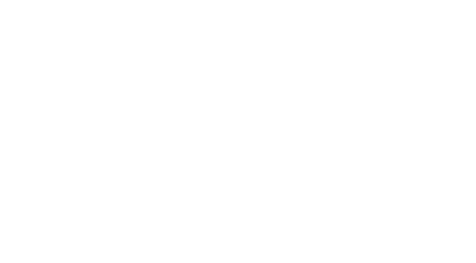
Treasury Output
Among approved proposals,
Polkadot at Davos during the World Economic Forum’s Annual Meeting 2022, which was tabled via
Motion 202 and passed as
Referendum 64 through simple majority tallying, requested the highest amount of 120,897 DOT.
However, due to the
enactment period, the fund was not unlocked until block #11,289,600, approximately July 23.
The DOT treasury also expects another enormous spending of 993,286.08 DOT for the Polkadot
Pioneers Prize upon the completion of
Bounty 10. Though concrete details have not been announced, this so-called
“biggest bounties in blockchain"
promise to be a massive force that drives builders into Polkadot and propels development
forward.
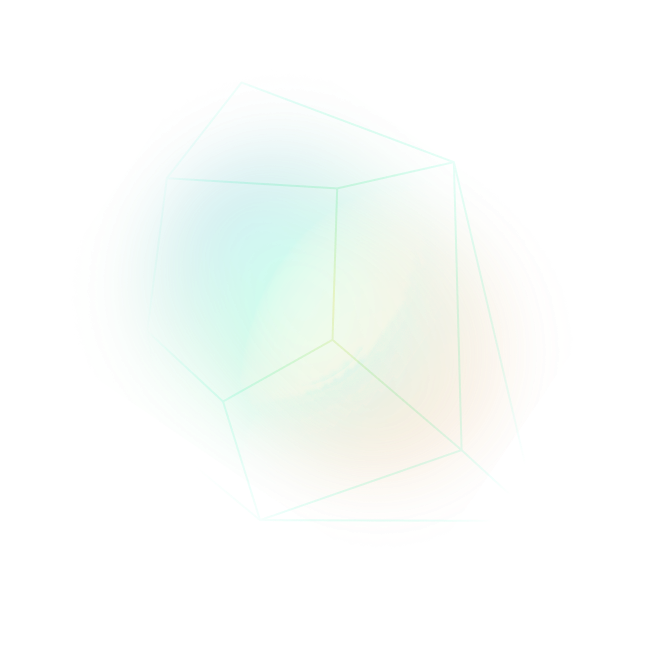
The DeFi Economy
Parachain
*Only DeFi parachains are discussed here. For analyses of DApps, please scroll down to the next sections.
Overall, DeFi activities were higher in Q1 compared to Q2, partly because token prices all declined in the bear market. Polkadot DeFi parachains far outweighed those on Kusama in terms of total value locked (TVL), with two leading representatives Acala and Parallel both oscillating around $500M during H1. Though began much later than Parallel, Acala got off on the right foot with an average of 15% higher in TVL compared to Parallel in the first two months, peaking at $767.30M, only to lose their lead by 20% on average in the remaining part of H1. Parallel took the opportunity to rise up as the reigning protocol in terms of TVL, even though this is a hard-to-confirm conclusion due to inconsistencies in data reporting between Defi Llama and Parallel Analytics.
TVL by Polkadot DeFi Parachains
In the Kusama ecosystem, Bifrost consistently took the lead throughout
the
first six months: at the peak in early January, its TVL was 32 times higher than
Genshiro’s
TVL which did not fluctuate much in the same period.
Karura’s chart pattern was roughly similar to Bifrost’s, and by the
end of
June the two lines seemed to have converged at some points.
TVL by Kusama DeFi Parachains
DEX
Both StellaSwap and Beamswap achieved skyrocket growth
in their
first two weeks by using the same lofty yield farming APY strategy to
attract users,
2000%+ and 700%+ respectively. Within the first 24 hours, StellaSwap
surpassed $500K
in total value locked while Beamswap’s TVL shot up to
$40M, even though the latter only had six staking options compared to
StellaSwap’s eight
farms at launch.
These diverse alternatives combined with the first
mover advantage
did prove their effectiveness throughout six months though: aside from
three days in
March with minor outpacing from Beamswap, StellaSwap were consistently
leading the
game in the Moonbeam/Moonriver ecosystem.
TVL by Polkadot DApp DEXes
An
incentivization effort
at the end of May pulled Solarbeam above both Beamswap and Zenlink, even
nearing StellaSwap for two weeks. Their sister Solarflare on Moonbeam
seemed to have lost community and marketing support after hitting $97.76M
in TVL mid-January. Apparently, the Solarbeam Foundation’s new strategy
was to veer away from the harsh competition with StellaSwap and Beamswap
on Moonbeam and focus on pushing Solarbeam to be the number one native
DEX on the Moonriver ecosystem.
Starting Q3, Zenlink, a DEX protocol running on
Bifrost, Moonbeam and Moonriver plans to
extend their activities
to Astar Network, a step that will hopefully boost their decreasing TVL.
They can face difficulties competing against ArthSwap, currently the
number one DEX on Astar whose TVL peaked at $169.50M in April, but can
also gain advantage as ArthSwap suffered severely from the LUNA/UST
crash in May. Their TVL had dropped more than twice since that point
without signs of resurgence. In fact, their TVL halved again at the end of
June.
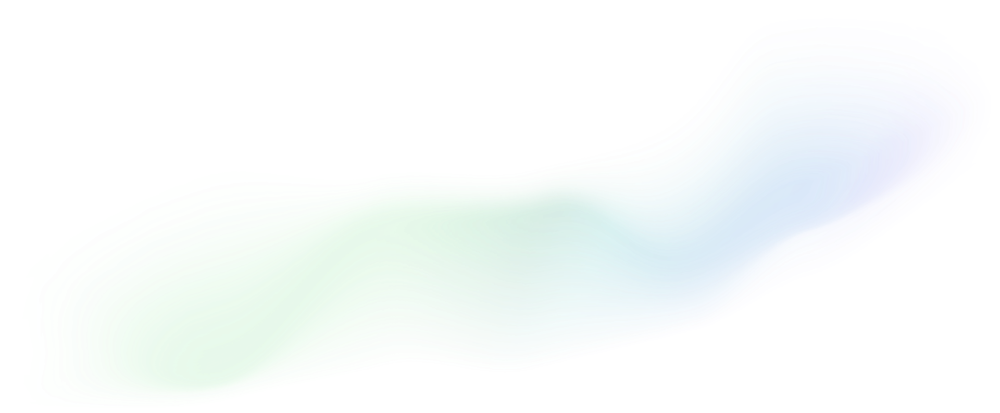
Lending & Borrowing
Three dominant lending protocols, unsurprisingly, were layer-two
DApps built on Moonriver, Moonbeam and Astar. Moonwell Apollo was the first to
launch with impressive records: it took the protocol only 3 days to surpass $100M
and 9 days to surpass $150M in TVL.
Their latecomer sister Moonwell Artemis, which had just launched
on June 23 on Moonbeam, was even more remarkable with
$150M TVL
achievement in less than 2 days. Thanks to Moonwell Artemis's exceptional launch,
Moonwell Apollo enjoyed a spike in TVL on June 24, with an increase of 2.3 times
from $81.90M to $190M before dipping back to $87.90M the next day.
TVL by Polkadot Lending Protocols
Compared to the two Moonwell protocols, Starlay was much more modest. Their TVL only reached
$200M once on April 16 and had mostly declined since, going as low as $13M by the end of
June.
Stablecoin
Deemed as the
possible future of money, stablecoins were gaining popularity in Polkadot as more and more projects entered the
ecosystem, meaning competition for adoption was getting intense. aUSD, a native
overcollateralized crypto-backed stablecoin issued by Acala, remained the most common
in Polkadot partly due to its
$250M aUSD Ecosystem Fund
and its rapid integration with DeFi protocols and parachains in the ecosystem.
At its peak, aUSD issuance on both Acala and Karura totaled $14.98M on May 7, before quickly plunging and arriving at $4.33M on Acala and $3.77M on Karura, adding up to $8.10M by the end of June.
This near halving in total supply is nowhere near attractive; instead, aUSD risks losing its leading position to AstridDAO's BAI, another native multi-collateral stablecoin developed on Astar Network, whose circulation oscillated around $5M at the end of H1.
aUSD Issuance
The most popular stablecoin USDT
made its official entrance into Kusama
on April 13. Before this event, multi-chain stablecoins such as USDT, USDC, DAI and
BUSD had already been bridged to Polkadot via Moonbeam/Moonriver, but it was only
after USDT’s entrance that Polkadot had native deposits.
However,
500,000 USDT on Statemint
out of more than $80B in total circulation at the time of issuance signifies how
loosely connected Tether and Polkadot are. Without a close, if not strategic
partnership that results in an increase in total USDT supply in Polkadot soon, Tether
might have difficulties in overtaking native stablecoins while Polkadot might
struggle in onboarding USDT users.
Non-fungible tokens (NFTs)
Though still in its infancy, the NFT segment on Polkadot had seen some
promising native players, including
KodaDot,
Moonbeans,
Singular,
Unique Network (NFT
marketplace),
Kusama Kingdom,
Moonsama,
Kanaria,
Donkey Gang,
Astar Degens (NFT collection).
RMRK, the
Kusama-based NFT protocol that owns both Singular and Kanaria, was dominating the
field in H1 2022.
RMRK NFT Cumulative Sales Volume
Despite the bear market, RMRK's NFT sale volume in KSM continued to rise
exponentially
at the
rate of 167 times in the first six months, topping 93,895.64 KSM (approximately
$4.39M)
at the
end of June. Among trending collections, Kanaria Genesis (KANBIRD) stands out with a
cumulative sale volume
of 34,518.13 KSM, approximately 11.3 times higher than the runner-up Kanaria
Background (KANBG) whose total sale volume in H1 2022 amounted to 3,040.69 KSM.
Kusama
Kingdom's
two prominent collections Kusama Queens and Kusama Kings settled at third and fifth
place
respectively, adding up to 4,385.27 KSM in total.
NFT Market Overview
| NFT Collection | Volume (KSM) | Transactions |
|---|---|---|
| KANBIRD | 34,518.13 | 1146 |
| KANBG | 3,040.60 | 392 |
| KQ01 | 2,831.00 | 78 |
| RMRK profile banners | 2,346.43 | 2252 |
| Kusama Kings | 1,554.27 | 26 |
| EVRLOOT_TAROT_CA... | 1,149.23 | 400 |
| KANPRTN | 1,128.78 | 367 |
It is worth noting that NFT sales shot up on June 19 and 29, with Kanaria Genesis taking up
the
majority of volume. This was likely due to the
Skybreach land sale
which was scheduled from June 17 onwards. The overall hype surrounding Kanaria Birds came
not only from Skybreach perks awarded to Kanaria holders but also from the technology behind it,
known as
RMRK NFT 2.0. NFTs built this way are far more advanced than the simple
ETH-like version: besides being multi-chain, multi-resource and eco-friendly, they can also equip or
own other NFTs and evolve over time.
RMRK NFT Daily Sales Volume
Web3
Projects
Web3 projects in Polkadot were starting to show positive signs. As
the sole representative of SocialFi in the ecosystem, Subsocial was attracting users
with their built-in
donation program
where supporters can choose from 15 types of tokens to tip their favorite creators.
Although detailed data was not provided and there is much room for UI/UX
improvement, Subsocial was showing ambitions with their expansion to Sub.ID and
Polkadot Domains to compete with Polka Name System.
In terms of identity, KILT protocol, Litentry/Litmus and Fractal
were three outstanding names. While Moonsama
recently integrated
KILT protocol, Litentry
collaborated
with Phala Network on the Spirit NFT minting event and Fractal
joined forces
with Beamswap. Sumi Network, a messaging protocol on Polkadot, prompted Gavin Wood
to
send the first message
from Buenos Aires to New York City during the Polkadot Decoded event series.
Meanwhile, the decentralized crowdfunding platform Imbue Network
won
parachain slot #40 on Kusama with no funding whatsoever.
Infrastructure
Polkadot utilizes
WebAssembly
(WASM), a much more advanced and efficient runtime that allows compilation of
multiple high-level coding languages, including Rust, C, C++, compared to the restriction of
only Solidity in EVM. It is no surprise, then, that Ethereum 2.0 is discarding EVM and
moving towards WASM
implementation.
Advantages
of WASM include portability, universality, near-native performance, fast startup
time and security, making it the ideal option for deployment on decentralized blockchains. In
Consensus 2021, Polkadot co-founder Gavin Wood
stated that EVM legacy is important to support, but
WASM is the future of smart contracts.
Current WebAssembly Language Usage
On May 31, Supercolony organized
WASM conference 2022, a one-day virtual event that featured business and technical talks from industry leaders with the view to answering why WASM is the top choice for next-generation DApp development. The Astar team
recently announced that its Kusama canary network Shiden was the first commercial parachain to support WASM smart contracts, meaning that WASM DApps can now be deployed on Shiden. They had also been working on
Swanky Suite, the all-in-one tool to help developers build WASM smart contracts in Polkadot and Kusama.

Closing Thoughts
The bear market undoubtedly affected the Polkadot ecosystem as a whole, but hints of positive
growth were still visible throughout H1, such as consistent development activities and DeFi
incentivization campaigns with even more towering funds, such as
Harvest Moon
and the
$100M Ecosystem Fund
co-created by the Moonbeam Foundation and Arrington Capital.
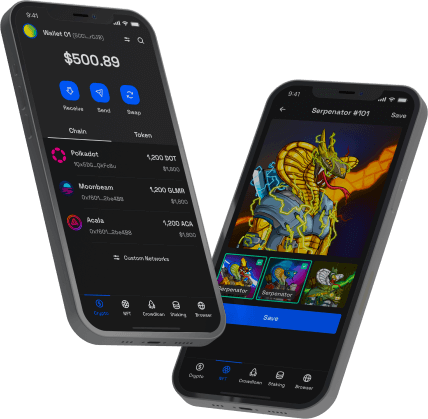
New native projects sprouted up regularly, especially in the DeFi segment, such
as
Orcus Finance,
Sirius Finance,
Avault and
SiO2 Finance on Astar Network,
Tapio Protocol and
RetroDex on Acala, and
Athos Finance
on Moonbeam Network. GameFi, an area that hopefully we can dive deep into next
time, saw some potential players including
Exiled Racers,
PhalaWorld,
MoonFit,
Skybreach and
Moonsama. Current projects are working hard to roll out new features: for example, we
plan to introduce
SubWallet mobile app in Q3.
The growth of these DApps are promising for the tipping point of Polkadot, because they will be the core actors that attract end-users to the ecosystem. It's a win-win situation after all: wherever users go, resources will follow. Tether will surely increase its USDT supply on Polkadot if the user base is tripled. More EVM multi-chain projects will jump in, and everyone gains benefits.
At that point, data will have to be reported in a precise and sufficient manner, ideally by a third party. While collecting data, we encountered several cases of data defects that could have been remedied if more attention had been paid. Because data speaks volumes about the development of an ecosystem, it is of major importance that both project teams and data aggregator platforms make sure that the recording and reporting are correct.